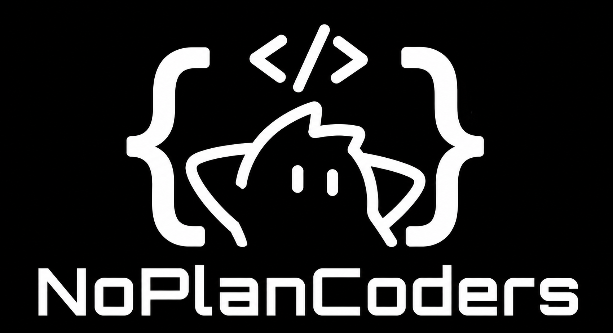

まず作る
細かく考えすぎず、まず動く形にします。

GitHubの組織
NoPlanCodersはGitHubの組織です。Webサイト、AI関連ツール、開発用ツールなどを作って公開しています。
思いついたものを作って、GitHubに置いています。小さいものでも、使えそうなら公開します。
細かく考えすぎず、まず動く形にします。
コードやメモは、できるだけGitHubで見られるようにします。
見た目よりも、ちゃんと使えることを優先します。
Webサイト、開発用ツール、AIを使った小さなツールなどを作っています。
NoPlanCodersの公開リポジトリを表示しています。
GitHubから情報を取得しています。
参加
気になるリポジトリがあれば、IssueやPull Requestを送ってください。